KM02 — Decimals aur Place Value, dot ka jadoo?
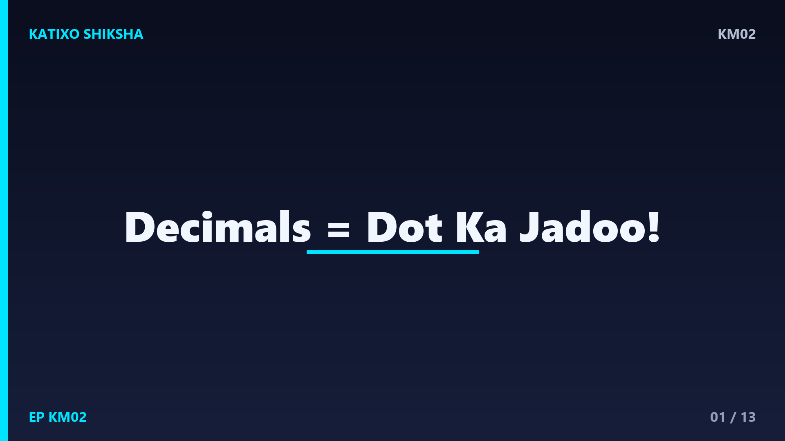
Slide 1Namaste बच्चों! Katixo KhojLab me तुम्हारा फिर से स्वागत है! आज हम सीखेंगे एक छोटे से जादुई dot के बारे में, जिसे कहते हैं decimal point. सोचो जब तुम दुकान पर जाते हो और चॉकलेट की कीमत होती है साढ़े बारह रुपये, तो उसे लिखते हैं 12.5 रुपये. ये बीच वाला dot ही decimal है! आज हम समझेंगे place value और decimals, एकदम मज़ेदार तरीके से, step by step. तो तैयार हो जाओ, चलो शुरू करते हैं!
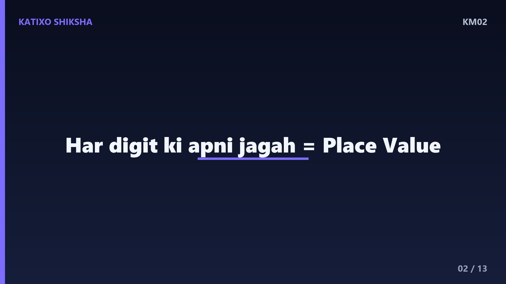
Slide 2सबसे पहले समझो place value, यानी स्थानीय मान. किसी number में हर digit की एक जगह होती है, और हर जगह की एक कीमत होती है. जैसे number 345 में, 5 है ones की जगह यानी इकाई, 4 है tens की जगह यानी दहाई, और 3 है hundreds की जगह यानी सैकड़ा. तो 345 का मतलब है तीन सौ, चालीस और पाँच. बच्चों, हर digit की जगह बदलने से उसकी कीमत बदल जाती है. यही है place value का जादू!
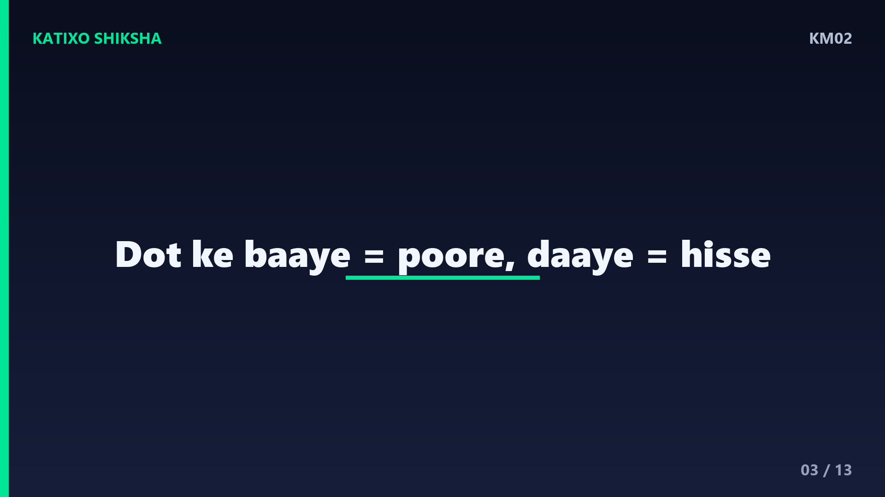
Slide 3अब आता है हमारा हीरो, decimal point! जब किसी चीज़ का पूरा हिस्सा नहीं होता, बल्कि टुकड़ा होता है, तब हम decimal इस्तेमाल करते हैं. एक pizza को 10 बराबर हिस्सों में काटो, और 3 हिस्से लो, तो वो होगा 0.3 यानी zero point three. decimal point के बाईं तरफ होते हैं पूरे numbers, और दाईं तरफ होते हैं टुकड़े यानी हिस्से. ये छोटा सा dot पूरे और अधूरे को अलग करता है, बच्चों!
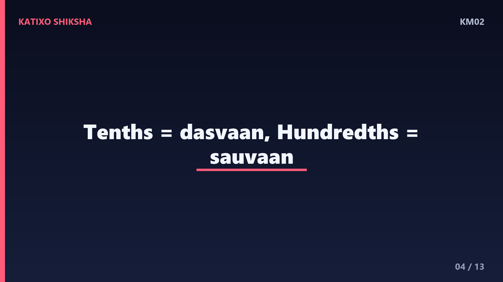
Slide 4decimal point के दाईं तरफ भी place value होती है, पर थोड़ी अलग. पहली जगह को कहते हैं tenths यानी दसवाँ हिस्सा, क्योंकि वहाँ चीज़ को 10 टुकड़ों में बाँटा जाता है. दूसरी जगह को कहते हैं hundredths यानी सौवाँ हिस्सा, जहाँ चीज़ को 100 टुकड़ों में बाँटते हैं. जैसे 0.7 में 7 है tenths की जगह, और 0.25 में 2 है tenths और 5 है hundredths की जगह. देखा, दाईं तरफ हिस्से छोटे होते जाते हैं!
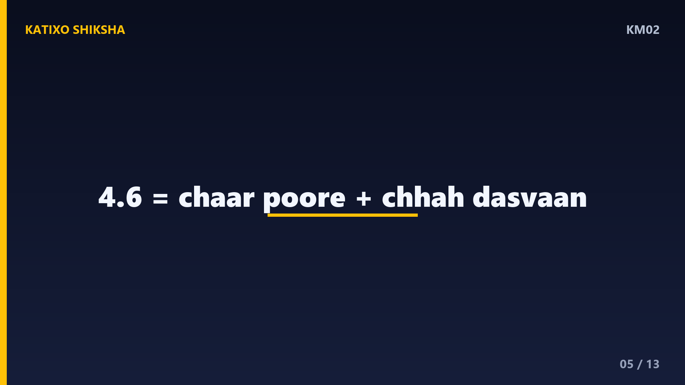
Slide 5चलो पहला worked example करते हैं. number है 4.6. इसे कैसे पढ़ें और समझें? dot के बाईं तरफ है 4, यानी चार पूरे. dot के दाईं तरफ है 6, जो tenths की जगह पर है, यानी छह दसवाँ हिस्से. तो 4.6 का मतलब है चार पूरे और छह दसवाँ हिस्सा. इसे पढ़ते हैं four point six. सोचो तुम्हारे पास 4 पूरी चॉकलेट हैं और एक चॉकलेट के 10 में से 6 टुकड़े. एकदम आसान है ना बच्चों?
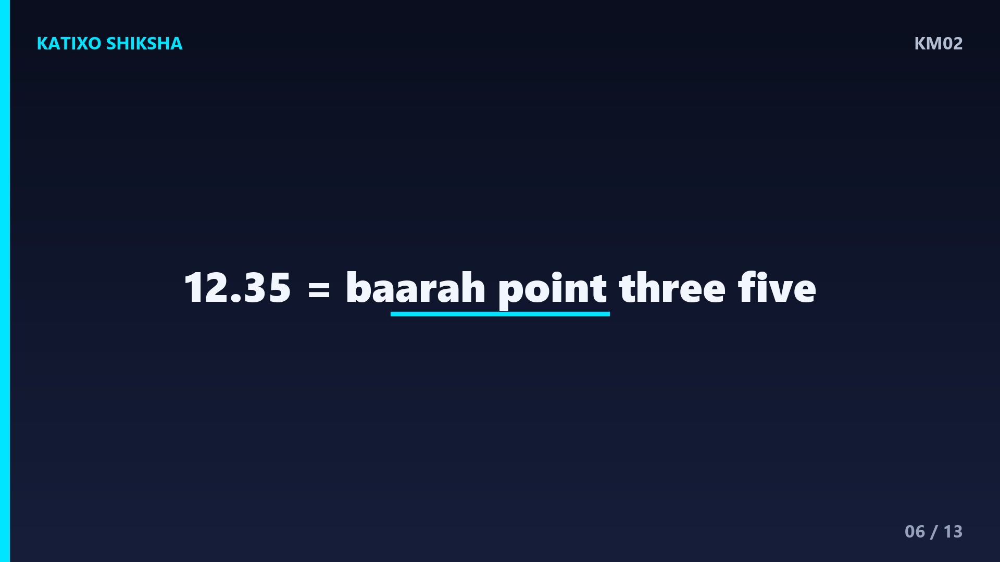
Slide 6अब दूसरा worked example, थोड़ा बड़ा. number है 12.35. सबसे पहले dot के बाईं तरफ देखो: 1 है tens की जगह और 2 है ones की जगह, यानी बारह पूरे. अब dot के दाईं तरफ: 3 है tenths की जगह और 5 है hundredths की जगह. तो 12.35 का मतलब है बारह पूरे, तीन दसवाँ और पाँच सौवाँ हिस्सा. इसे पढ़ते हैं twelve point three five. याद रखो, dot के बाद हर digit अलग-अलग बोलते हैं!
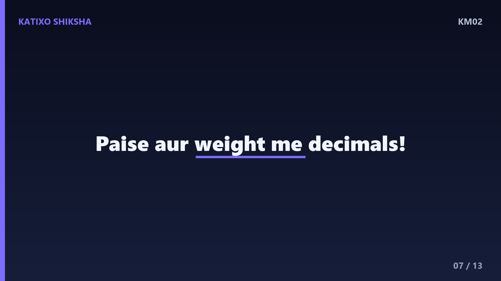
Slide 7अब एक मज़ेदार रोज़ की मिसाल. पैसों में decimals हर जगह हैं! सोचो एक pencil की कीमत है 5.50 रुपये, यानी साढ़े पाँच रुपये. यहाँ 5 है पूरे रुपये और .50 है पैसे वाला हिस्सा. ऐसे ही जब तुम्हारा weight मापते हैं, तो शायद आए 28.5 किलो, यानी अट्ठाईस पूरे किलो और आधा किलो. decimals हमें पूरे और टुकड़े दोनों एक साथ लिखने देते हैं. कितने काम के हैं ना!
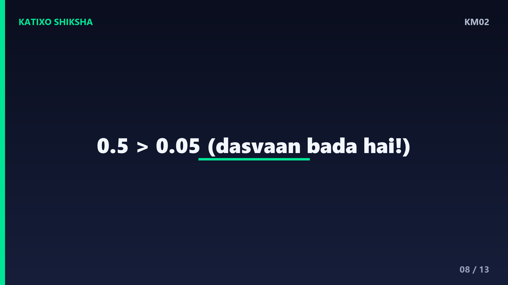
Slide 8अब एक तीसरा worked example, तुलना का. कौन बड़ा है, 0.5 या 0.05? बच्चों, ध्यान से देखो. 0.5 में 5 है tenths की जगह, यानी पाँच दसवाँ हिस्सा. 0.05 में 5 है hundredths की जगह, यानी पाँच सौवाँ हिस्सा. दसवाँ हिस्सा सौवें हिस्से से बड़ा होता है! तो 0.5 बड़ा है 0.05 से. एक pizza का दसवाँ टुकड़ा, सौवें टुकड़े से बड़ा ही होगा. जगह पहचानो, फिर तुलना करो!
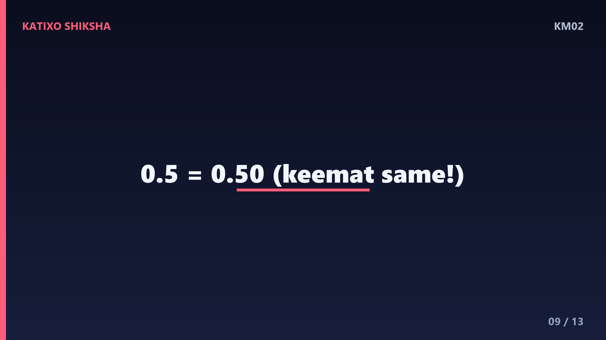
Slide 9एक और छोटा जादू सीखो. किसी पूरे number में हमेशा एक छुपा हुआ decimal point होता है. जैसे 7 को हम 7.0 भी लिख सकते हैं, मतलब वही रहता है. और अगर dot के दाईं तरफ आखिर में zero लगा दो तो भी कीमत नहीं बदलती. जैसे 0.5 और 0.50 बराबर हैं! क्योंकि पाँच दसवाँ और पचास सौवाँ हिस्सा एक ही बात है. ये trick पैसों में बहुत काम आती है, बच्चों. याद रखना!
Slide 10अब समय है तुम्हारी बारी! Chalo try karein! तीन सवाल हैं, video रोको aur copy me हल करो. पहला: number 8.4 में dot के दाईं तरफ वाला digit किस जगह पर है? दूसरा: कौन बड़ा है, 0.7 या 0.07? तीसरा: 6.25 को शब्दों में कैसे पढ़ेंगे? जल्दबाज़ी मत करना, place value ध्यान से सोचना. हो गया? शाबाश! अब अगली slide पर answers देखते हैं. खुद से कोशिश करना सबसे ज़रूरी है, बच्चों!
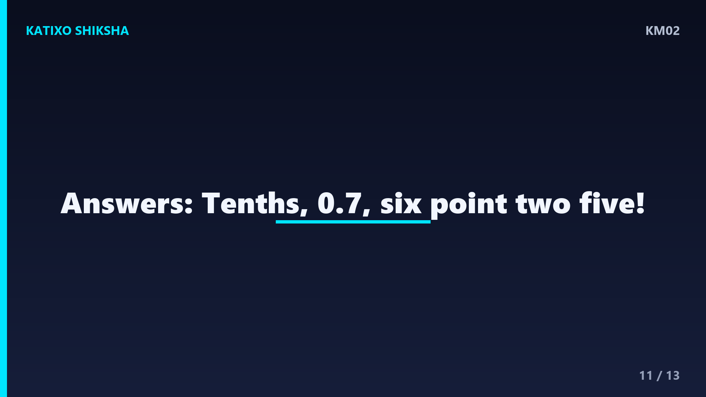
Slide 11चलो answers मिलाते हैं! पहला: 8.4 में dot के दाईं तरफ 4 है, जो tenths की जगह पर है, यानी चार दसवाँ हिस्सा. दूसरा: 0.7 में 7 है tenths की जगह, और 0.07 में 7 है hundredths की जगह, इसलिए 0.7 बड़ा है! तीसरा: 6.25 को पढ़ेंगे six point two five, यानी छह पूरे, दो दसवाँ और पाँच सौवाँ हिस्सा. कितने सही हुए बच्चों? जो गलत हुए, उन्हें फिर से समझो!
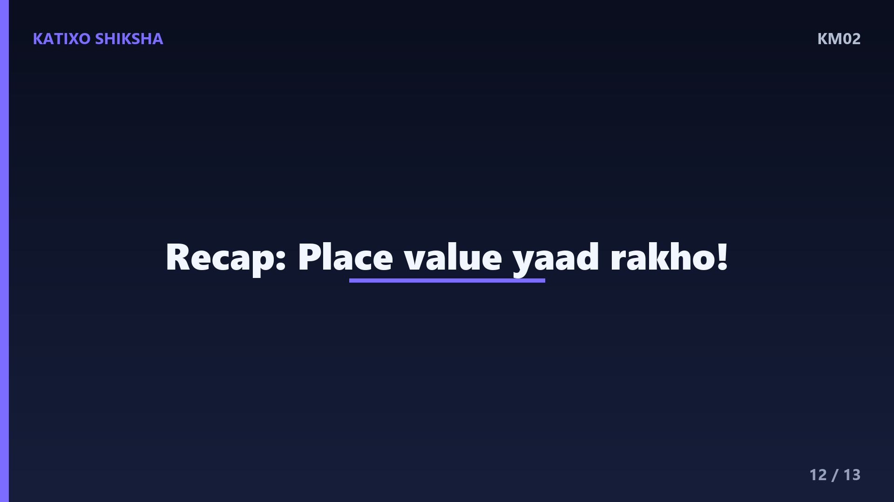
Slide 12चलो अब पूरा recap करते हैं! decimal point एक छोटा dot है जो पूरे numbers को टुकड़ों से अलग करता है. dot के बाईं तरफ होते हैं ones, tens, hundreds. dot के दाईं तरफ होते हैं tenths यानी दसवाँ, और hundredths यानी सौवाँ हिस्सा. तुलना करते समय हमेशा place value देखो. और याद रखो, 0.5 बराबर है 0.50 के! बस इतना सा याद रखो aur तुम decimals के master बन जाओगे, बच्चों!
Slide 13शाबाश बच्चों! आज तुमने decimals aur place value सीख लिया, dot के जादू के साथ! रोज़ थोड़ी-थोड़ी practice करते रहना, दुकान पर कीमतें पढ़ना, फिर ये सवाल खेल जैसे लगेंगे. अगर मज़ा आया तो Katixo KhojLab subscribe karo, like करो aur bell दबाओ ताकि हर नया मज़ेदार lesson सबसे पहले तुम तक पहुँचे! अगली बार एक नए topic के साथ मिलेंगे. तब तक सीखते रहो, मुस्कुराते रहो. Shabaash, milte hain agle episode me!